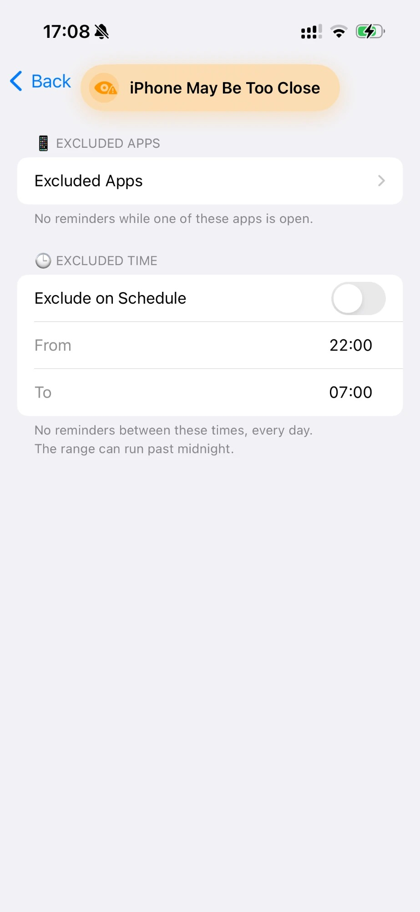
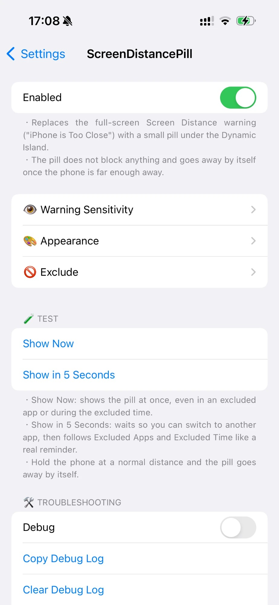
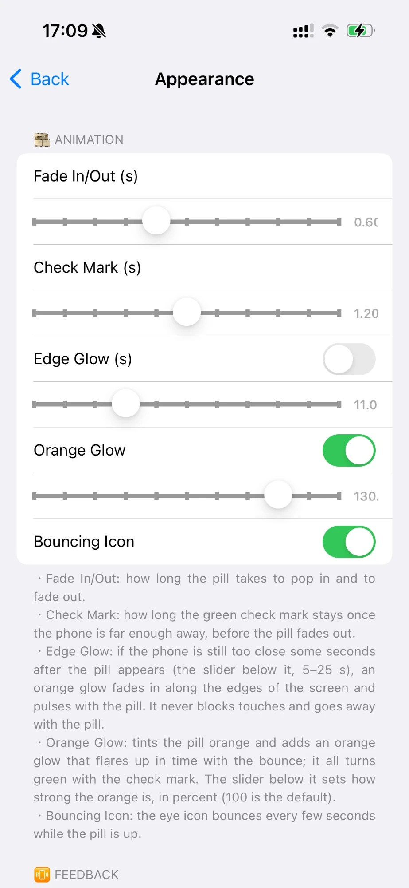

Developer
Qn
Qn



Replaces the full-screen Screen Distance warning ("iPhone is Too Close", iOS 17) with a small pill under the Dynamic Island / Notch. The pill blocks nothing and goes away by itself once the face is far enough away (or no longer seen).